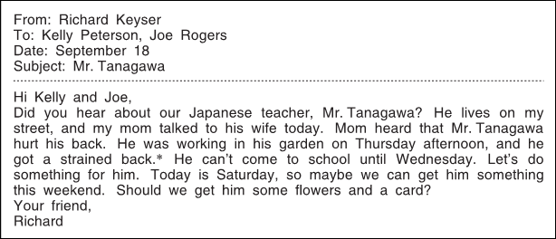
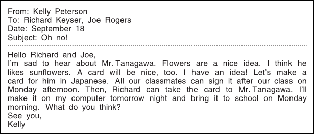
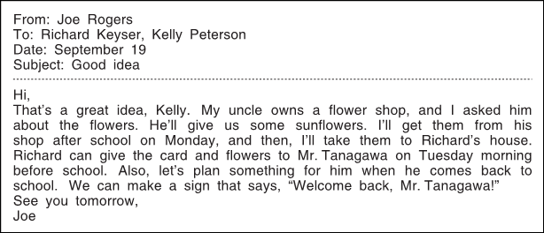
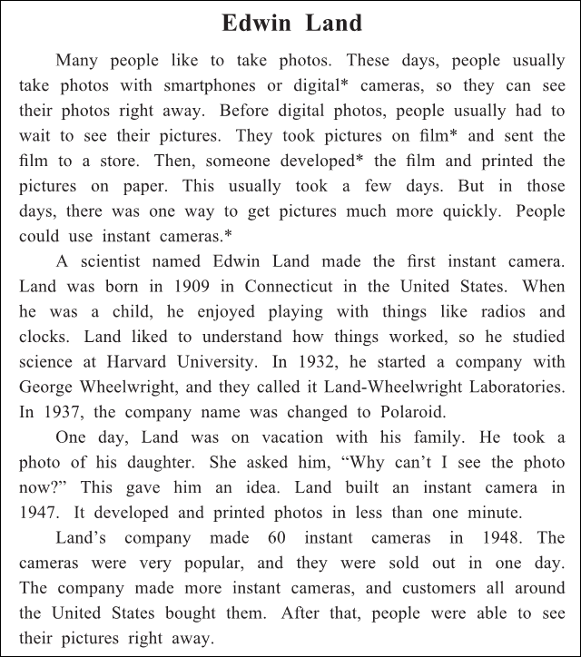
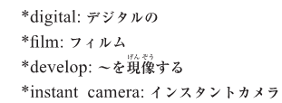

英語検定 ３級(2022年第1回No.3) 残り時間が0になると、自動的に採点します。 時間内に終了する場合は、一番下の「採点する」のボタンを押してください。 残り時間： 分 秒 No 英語検定３級筆記(2022年第1回) 3A 次の掲示の内容に関して、(21)と(22)の質問に対する答えとして 最も適切なもの、または文を完成させるのに最も適切なものを、 解答欄の1～4の中から一つ選びなさい。 No21 What is this notice about? 1 A contest at a school. 2 A party for a teacher. 3 A new school club. 4 Some free dance lessons. 答え： 1 2 3 4 No22 Mr.Sharp is going to 1 or 2 or 3 or 4 1 teach a P.E. class with Mr.Lee. 2 watch a dance performance on October 10. 3 go to a music festival with Ms.Matthews. 4 dance in the school gym on October 21. 答え： 1 2 3 4 3B 次のEメールの内容に関して、(23)から(25)までの質問に対する答えとして最も適切なもの、 または文を完成させるのに最も適切なものを、解答欄の1～4の中から一つ選びなさい。    No23 When did Mr.Tanagawa hurt his back? 1 On Monday. 2 On Wednesday. 3 On Thursday. 4 On Saturday. 答え： 1 2 3 4 No24 What will Kelly do tomorrow night? 1 Make a card. 2 Buy a gift. 3 Call Mr.Tanagawa. 4 Take a Japanese lesson. 答え： 1 2 3 4 No25 Who will take the sunflowers to Richard’s house? 1 Richard. 2 Richard’s mother. 3 Joe. 4 Joe’s uncle. 答え： 1 2 3 4 3C 次の英文の内容に関して、(26)から(30)までの質問に対する答えとして最も適切なもの、 または文を完成させるのに最も適切なものを、解答欄の1～4の中から一つ選びなさい。   No26 What did Edwin Land like to do when he was a child? 1 Play with radios and clocks. 2 Make things with paper. 3 Dream about starting a company. 4 Study to get into a good school. 答え： 1 2 3 4 No27 What happened in 1937? 1 Land got into Harvard University. 2 Land met George Wheelwright. 3 Land-Wheelwright Laboratories changed its name. 4 Polaroid built a new kind of camera. 答え： 1 2 3 4 No28 Who gave Land the idea for an instant camera? 1 His daughter. 2 His wife. 3 A customer. 4 A friend. 答え： 1 2 3 4 No29 The first instant cameras 1 or 2 or 3 or 4 1 were too expensive. 2 were all sold very quickly. 3 could only be used for one day. 4 took a few minutes to print pictures. 答え： 1 2 3 4 No30 What is this story about? 1 The history of digital cameras. 2 A famous photoc ollection. 3 The first smartphone with a camera. 4 A man who built a special camera. 答え： 1 2 3 4





 英語検定 ３級(2022年第1回No.3)
英語検定 ３級(2022年第1回No.3)